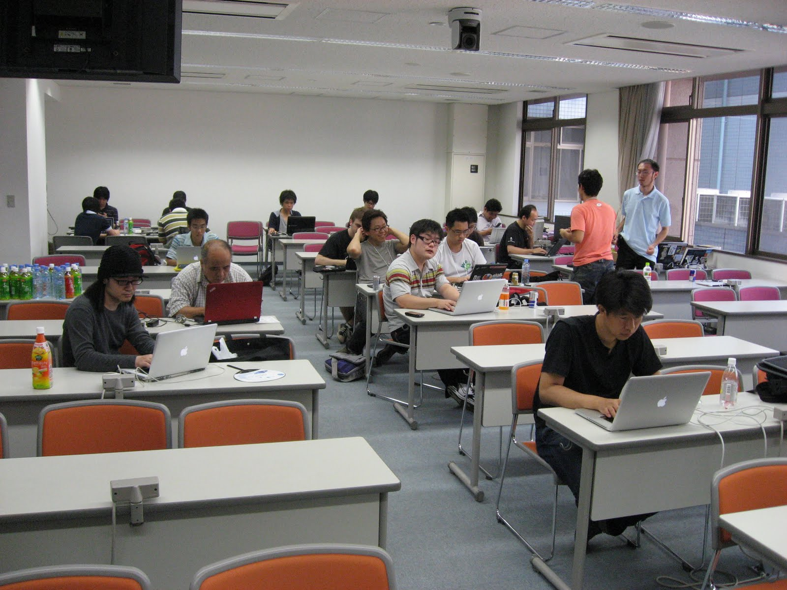

開発スプリント¶

{kind=link}
PyCon JP 2011 でのスプリントの様子
概要¶
| 開催日: | 2012-09-17(月・祝) |
|---|---|
| 時刻: | 10:00-18:00 |
| 会場: | 産業技術大学院大学 (Room 351a、357、358) |
スプリントリーダーと参加者の登録は PyCon JP 2012 Sprints - connpass からお願いします。 事前登録は不要ですが、スプリントのチーム分け用の情報として必要なので、事前登録に協力をお願いします。
スプリントとは¶
Sprintは、短期集中型のソフトウェア開発イベントです。Hack-a-thon(ハッカソン)や開発勉強会といった呼ばれ方もしていると思います。 また、スピーカーやその他たくさんの開発者の方と話をするチャンスでもあります。 今回は、PyCon JP 2012 の翌日の9月17日(月・祝)に、同じ会場で行います。
参加資格¶
- 誰でも無料で参加できます
- カンファレンスのチケットも必要ありません
- Sprint 会場には、電源と無線LAN、ホワイトボードを用意する予定です
- 参加者のみなさんは、開発用のPCをお持ちください
持ち物¶
- 開発用のノートPCと充電器をお持ちください
- 無線LANは会場に用意する予定です
Sprintの提案、参加¶
テーマの提案と参加登録は誰でもできます
提案方法は、後日用意するスプリント用のサイトにやりたいテーマを書きこんで、リーダーになれば完了です。
もちろん、リーダーにならなくても、他の人の提案しているテーマに参加することも可能です。その場合もスプリント用サイトへの書き込みは必須ではありませんが、リーダーが何を準備するかなどを考える助けになるので、事前に書きこんでいただけたら嬉しいです。
Sprintの一覧¶
Sprint の参加は こちら から 上記申し込みページで申し込まれた sprint の内容一覧です。
気になるものがあったら是非参加してみてください。
| 内容 | リーダー |
|---|---|
| Sphinx Sprint か Sphinx ハンズオン | @tk0miya |
| Django Sprint | @hirokiky |
| App Engine ハンズオン | @tmatsuo |
| Mercurial ハンズオン | @troter |
| よってたかって 新生 python.jp を何とかする集い | @atsuoishimoto |
| PyPy についてみんなでお話する会 | @rokujyouhitoma |
| NVDA Sprint | @24motz |
| Pyramid Sprint (資料) | @aodag |
| Sphinxの小ネタを海外MLから拾って日本MLに紹介する | @shimizukawa |
| Windows Azure で Python | @michiyata |
よくある質問(FAQ)¶
- Q: Sprint ってなんですか？
- A: Sprint は、短期集中型のソフトウェア開発イベントです。テーマ毎に開発者が集まり、自由に開発を行います。
- Q: なにをしたらいいんですか？
- A: 特に決まりはありません。自分のやりたい開発を進めても、他の人のテーマに参加しても自由です。いろんな人やチームに茶々をいれて仲良くなるのも良いと思います。
- Q: 参加資格をおしえてください。
- A: 参加資格はありませんし、参加チケットや参加費も不要です。参加してみたい！という気持ちがあればそれで十分です。
- Q: PyCon JP 2012 に参加していませんが、 Sprint に参加してもいいですか？
- A: 大丈夫です。どんどん参加してください。
- Q: 初心者でも参加できますか？
- A: もちろん参加できます。「参加してみたいけど初心者だから不安」という方は、PyCon JP 2012 のDay1 に初心者向けハンズオンもありますので、そちらに参加してみてもいいかもしれません。詳細は プログラム をご参照ください。
- Q: リーダーになるのにはなにか資格は必要ですか？
- A: 何もありません。Sprint に参加する人を募るため、Python コミュニティをより面白いものにするため、あるいは自分の開発仲間を増やすためなど、理由はいろいろあると思いますが、ぜひリーダーになってみてください。
- Q: 複数のテーマに参加できますか？
- A: 自分のやってみたいテーマがいくつもあって困る！という方は、各リーダーに相談してみましょう。
- Q: 食事はでますか？
- A: 出ません。チームごとなどで外に食べに行くとより親睦を深めることができるのでおすすめです。
- Q: Sprint 会場で飲食はできますか？
- A: 食事はできませんが、飲み物は問題ありません。
- Q: 途中入場・退場はできますか？
- A: 特に受付などを設ける予定はありませんので、可能です。